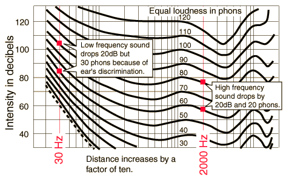

The Bass Loss Problem
When sound drops off according to the inverse square law, the sound further from the source is not only perceived as less loud but also as deficient in the bass frequencies. This is a result of bass discrimination in the human hearing response as revealed by the equal loudness curves.

You can see that both the low frequency sound and the high frequency sound drop by 20dB when the distance is increased by a factor of ten. But the equal loudness curves are crowded closer together for the extreme low frequency range because the ear progressively discriminates against those low frequencies. So a 20dB drop at 30Hz bridges three equal loudness curves while the 2000 Hz sound bridges only two. The result is that the 2000Hz sound is expected to be perceived as 10 phons louder than the low frequency sound, and by the rule of thumb for loudness, that is twice as loud.
|
Index
Auditorium acoustics |